| Ankunft | ÉRKEZŐ VONATOK | Arrivals |  | ||
|---|---|---|---|---|---|
| Tervezett érkezés |
Várható érkezés |
Vonat | Honnan | Vg. | |
| 8:30 | 8:42 | IC | Szeged | Szatymaz - Kistelek | 5 |
| 9:22 | Sz | Szentes | Csongrád | 2 | |
| 9:30 | 712 | Szeged | Kistelek - Szatymaz | 3 | |
| 9:31 | 727 | Budapest-Nyugati | Kecskemét - Cegléd | 5 | |
| 9:44 | 7897 | Külsőhalas | 3 | ||
| 9:48 | 37412 | Szentes | Csongrád | - | |
| 10:15 | 7892 | Kecskemét | 3 | ||
| 10:30 | 722 | Szeged | Kistelek - Szatymaz | 3 | |
| 10:31 | 737 | Budapest-Nyugati | Kecskemét - Cegléd | 5 | |